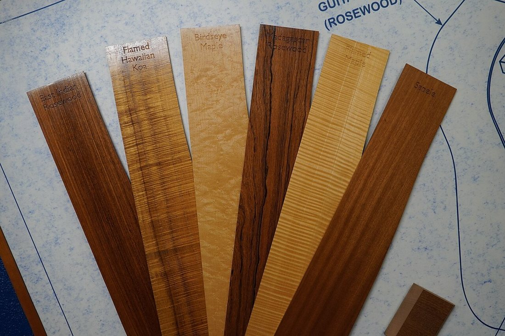
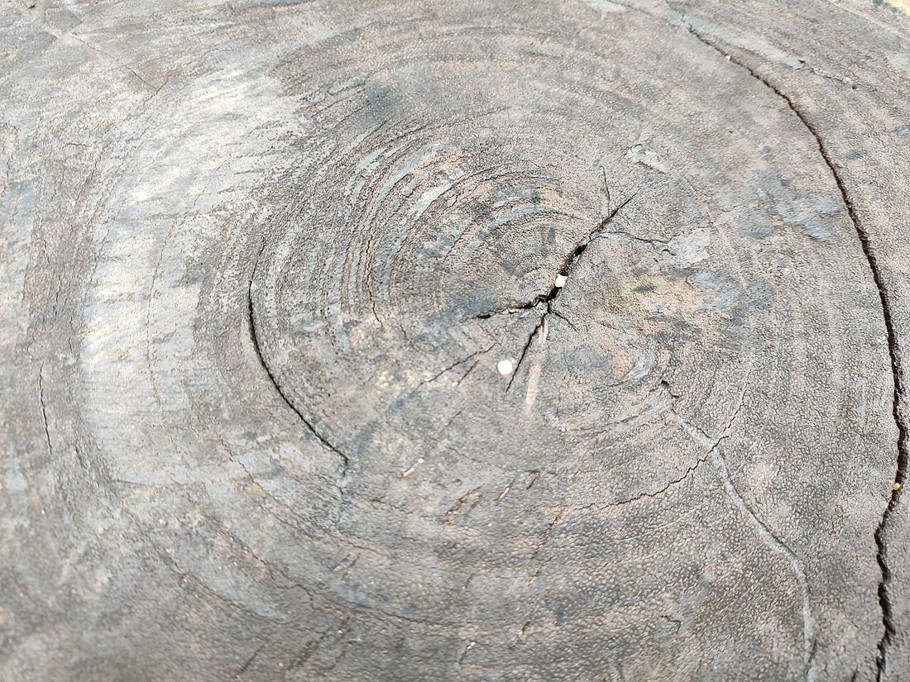
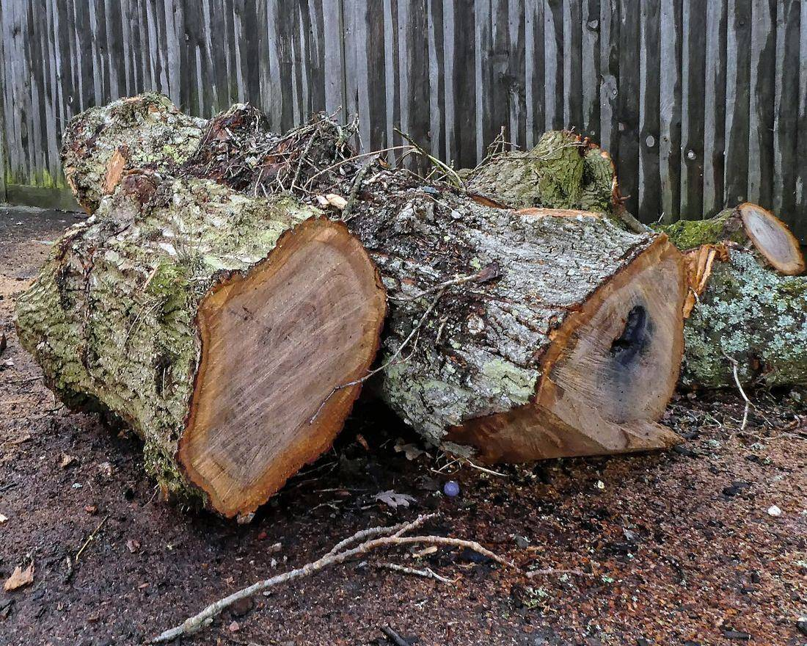

Көркем еңбек (ұлдар) · 2-бөлім · Ағаш өңдеу Art & Craft (Boys) · Section 2 · Woodworking Художественный труд (мальчики) · Раздел 2 · Обработка древесины
🌳 Ағаш: түрлері, құрылымы, қасиеттері
🌳 Wood: Species, Structure, Properties
🌳 Древесина: породы, строение, свойства
Материалды танысаң — оны дұрыс әрі ұқыпты өңдейсің. Know the material — and you will work it correctly and with care. Знаешь материал — обработаешь его правильно и аккуратно.
Ағаш (древесина) — ағаш діңінің қабығының астындағы қатты бөлігі. Ол — ежелден келе жатқан табиғи материал: жеңіл, берік әрі оңай өңделеді, сондықтан жиһаз, үй, ыдыс пен ою-өрнекті бұйым жасауда қолданылады. Шебер ағаштың түрін, оның құрылымын (талшықтар мен жылдық сақиналар) және қасиеттерін (тығыздық, қаттылық, ылғал) білгенде ғана дұрыс құрал таңдап, таза жұмыс істей алады. Wood is the hard part of a tree trunk beneath the bark. It is one of the oldest natural materials: light, strong and easy to work, which is why it is used for furniture, houses, dishes and carved objects. A craftsman can choose the right tool and work cleanly only when he knows the species, the structure (fibres and annual rings) and the properties (density, hardness, moisture) of the wood. Древесина — это твёрдая часть ствола дерева под корой. Это один из древнейших природных материалов: лёгкий, прочный и легко поддающийся обработке, поэтому из него делают мебель, дома, посуду и резные изделия. Мастер выберет нужный инструмент и сработает чисто только тогда, когда знает породу дерева, его строение (волокна и годичные кольца) и свойства (плотность, твёрдость, влажность).
🌲 Ағаш түрлері: қылқан жапырақты және жапырақты 🌲 Wood Species: Coniferous and Deciduous 🌲 Породы дерева: хвойные и лиственные
Қарағай, шырша, балқарағай, кедр. Жұмсақ, шайырлы, тік талшықты. Жеңіл өңделеді, арзан — құрылыста, тақтай мен жиһаз қаңқасында кең қолданылады. Шайыры оны шіруден қорғайды. Pine, spruce, larch, cedar. Soft, resinous, with straight fibres. Easy to work and cheap — widely used in building, for boards and furniture frames. The resin protects it from rot. Сосна, ель, лиственница, кедр. Мягкая, смолистая, с прямыми волокнами. Легко обрабатывается, дешёвая — широко идёт в строительство, на доски и каркасы мебели. Смола защищает её от гниения.
Емен, қайың, шамшат (бук), үйеңкі, көктерек. Көбіне қатты әрі тығыз, әдемі текстуралы. Оюға, әшекейлі жиһазға, паркетке таптырмайды. Қатты болғандықтан өңдеуге күш керек. Oak, birch, beech, maple, aspen. Mostly hard and dense, with a beautiful texture. Ideal for carving, fine furniture and parquet. Being hard, they need more effort to work. Дуб, берёза, бук, клён, осина. В большинстве твёрдые и плотные, с красивой текстурой. Незаменимы для резьбы, нарядной мебели и паркета. Из-за твёрдости требуют больше усилий при обработке.
🔬 Жақыннан көрейік 🔬 A Closer Look 🔬 Рассмотрим вблизи
🔍 Үлкейту үшін суретті басыңыз. 🔍 Tap an image to enlarge it. 🔍 Нажмите на фото, чтобы увеличить.



🪵 Діңнің құрылымы: қабаттар 🪵 Trunk Structure: the Layers 🪵 Строение ствола: слои
Бөренені торецтен қарасаң, орталықтан сыртқа қарай қабаттарды көресің: Looking at the end of a log, from the centre outwards you see these layers: Если посмотреть на торец бревна, от центра наружу видны слои:
ӨзекPith (core)Сердцевина
Дің ортасындағы жұмсақ, борпылдақ өзекше — оңай жарылады.The soft, loose core at the very centre — it splits easily.Мягкая рыхлая сердцевина в самом центре — легко растрескивается.
Өзектік ағашHeartwoodЯдро
Қою түсті, тығыз әрі берік ішкі бөлік — ең құнды материал.The darker, dense and strong inner part — the most valuable material.Тёмная, плотная и прочная внутренняя часть — самый ценный материал.
Шеткі ағашSapwoodЗаболонь
Ашық түсті жас қабат — су жүретін, бірақ әлсіздеу.A lighter young layer that carries water but is weaker.Светлый молодой слой — по нему идёт вода, но он слабее.
КамбийCambiumКамбий
Көзге көрінбейтін жұқа тірі қабат — осы арқылы дің жуандайды.A thin living layer, invisible to the eye, through which the trunk grows thicker.Тонкий живой слой, незаметный глазу, — за счёт него ствол растёт в толщину.
ҚабықBarkКора
Сыртқы қорғаныш қабат — ағашты кеуіп кетуден және зақымнан сақтайды.The outer protective layer that guards the wood from drying and damage.Наружный защитный слой — оберегает дерево от высыхания и повреждений.
💡 Жылдық сақина — бір жыл ішінде өскен ашық (көктем) және қою (күз) ағаштың жұбы. Сақиналарды санап, ағаштың жасын білуге болады. 💡 An annual ring is a pair of light (spring) and dark (autumn) wood grown in one year. By counting the rings you can tell the tree's age. 💡 Годичное кольцо — это пара из светлой (весенней) и тёмной (осенней) древесины, выросшей за один год. Подсчитав кольца, можно узнать возраст дерева.
📊 Негізгі қасиеттері 📊 Key Properties 📊 Основные свойства
| Свойство | Что означает | Почему важно мастеру |
|---|---|---|
| Плотность | масса древесины в единице объёма (кг/м³) | тяжёлая древесина (дуб) прочнее, но труднее режется |
| Твёрдость | сопротивление вдавливанию инструмента | твёрдые породы тупят инструмент — нужна острая заточка |
| Прочность | способность не ломаться под нагрузкой | от неё зависит, выдержит ли изделие нагрузку |
| Влажность | доля воды в древесине (%) | сырое дерево коробится и трескается при сушке |
| Текстура | рисунок волокон и годичных колец | определяет красоту изделия и направление резьбы |
| Қасиеті | Нені білдіреді | Шебер үшін неге маңызды |
|---|---|---|
| Тығыздық | көлем бірлігіндегі ағаштың массасы (кг/м³) | ауыр ағаш (емен) берік, бірақ кесу қиын |
| Қаттылық | құралдың батуына қарсылық | қатты ағаш құралды мұқалтады — өткір қайрау керек |
| Беріктік | күш түскенде сынбау қабілеті | бұйымның жүкті көтеретінін осы анықтайды |
| Ылғалдылық | ағаштағы судың үлесі (%) | дымқыл ағаш кепкенде иіледі әрі жарылады |
| Текстура | талшықтар мен сақиналардың суреті | бұйымның сұлулығы мен ою бағытын анықтайды |
| Property | What it means | Why it matters to a craftsman |
|---|---|---|
| Density | mass of wood per unit of volume (kg/m³) | heavy wood (oak) is stronger but harder to cut |
| Hardness | resistance to a tool being pressed in | hard species blunt tools — they need a sharp edge |
| Strength | ability not to break under load | it decides whether a piece will bear its load |
| Moisture | share of water in the wood (%) | wet wood warps and cracks as it dries |
| Texture | pattern of fibres and annual rings | sets the beauty of the piece and the carving direction |
⚖️ Қаттылығына қарай салыстыру ⚖️ Comparison by Hardness ⚖️ Сравнение по твёрдости
ЖұмсақSoftМягкие
Көктерек, қарағай, шырша, балқарағай. Жеңіл кесіледі, бастаушыға қолайлы.Aspen, pine, spruce, larch. Cut easily, good for a beginner.Осина, сосна, ель, лиственница. Легко режутся, подходят новичку.
ОрташаMediumСредние
Қайың, үйеңкі, шамшат (бук). Берік, тегіс, жиһаз бен оюға жақсы.Birch, maple, beech. Strong and smooth, good for furniture and carving.Берёза, клён, бук. Прочные и гладкие, хороши для мебели и резьбы.
ҚаттыHardТвёрдые
Емен, шегіршін, акация. Өте берік, паркет пен мықты жиһазға. Өткір құрал қажет.Oak, elm, acacia. Very strong, for parquet and sturdy furniture. Needs sharp tools.Дуб, вяз, акация. Очень прочные, для паркета и крепкой мебели. Нужен острый инструмент.